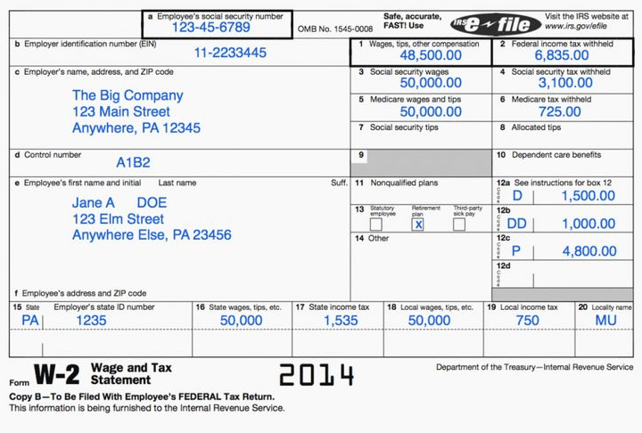

The problem
A tax form — a W-2, a 1099-INT, a 1040 — is a fixed page of labeled boxes, laid out however the IRS (or SSA, for a W-2) published it. A taxpayer's actual numbers live somewhere else entirely: in a database, as deeply nested JSON, shaped however the platform that owns the data wants it.
Two people typically do this work, at different times, without talking to each other. The annotator looks at a blank form and records, per box, where it is, how it should look, and which value it needs. The renderer is a separate application — someone else's code — that takes the annotator's file plus a taxpayer's data and stamps the right value into the right box.
This project defines the file that sits between them.
The actual flow
Blank form
The official W-2/1040/whatever PDF or image, with nothing filled in. You already have this — it's public, published by the IRS/SSA.
Annotation file (annotation.json)
A one-time "stencil": for every box on that blank form, it says where the box is (pixel coordinates), how the value should look (currency? masked SSN?), and which field of your app's data it needs ($.income.w2Forms[0].box1Wages). Someone writes this once per form, not per user.
Your app's data (values.json)
A specific user's actual numbers, in whatever shape your database already uses.
Resolver
Takes #2 + #3 and spits out: "put $48,500.00 at x=500, y=52." It does this for every box.
A renderer draws it
Takes that list and actually stamps the text onto the blank PDF/image at those coordinates.
Nothing here reads a filled-out form (that would be OCR, a different problem). This is the reverse direction: you already have the numbers, and this is how they know where to land on the page.
Background
For anyone unfamiliar with how U.S. tax filing actually works day to day, this video is a good primer on what a taxpayer goes through — the forms, the numbers, why it's confusing:
What this actually produces
The deliverable is a JSON file format — a FormTemplate — plus a TypeScript reference implementation that resolves one against a taxpayer's data. Concretely:
schema/form-annotation.schema.json — validates any annotation file against the spec.
src/types.ts + src/resolver.ts — typed shape, plus a resolver that turns an annotation + a taxpayer's data into print-ready output.
samples/w2/ — a real W-2 annotated end to end, with four different taxpayer datasets. Live below.
The data structure
One FormTemplate document describes one form, for one tax
year. It's mostly a list of FieldAnnotations — one per box.
FormTemplate
├── formId, formVersion, title — which form, which year
├── pages[] — physical page geometry
└── fields[] — one FieldAnnotation per box
├── id — stable, unique identity
├── position — x, y, width, height
├── format — how the value should look
├── dataBinding — which value, from where
├── conditional (optional) — whether to draw it at all
└── repeat (optional) — expand into N rowsFull field-by-field reference, including every property, is in the full spec.
What each part means
| Concept | What it answers | Example |
|---|---|---|
| Position | Exactly where the box sits on the page | { x: 500, y: 52, width: 90, height: 16, unit: "pt" } |
| Format | How the resolved value should print | currency, ssn (masked), date, boolean… |
| Data binding | Which value, from where in a deeply nested dataset | $.income.w2Forms[*].box1Wages |
| Stable identity | A box's identity survives form revisions | id: "w2.box1.wages" |
| Conditional | Whether the box renders at all | Only draw state tax boxes if state data exists |
| Repeat | One template expands into N rows | Box 12 codes — 1 template → up to 4 rows |
How it helps
Annotator and renderer never coordinate
The annotation file is the entire contract. Either side can be rebuilt independently as long as it agrees with the spec.
One format, any platform's data shape
The data-binding path reaches into whatever nested structure a platform already has — no data migration needed to adopt it.
Forms change yearly, annotations don't rot
formVersion keeps each year's layout self-contained, and stable ids let tooling track a box across years.
How the sample W-2 was annotated
sample-tax-forms/W-2.png was overlaid with a pixel ruler to
read each box's coordinates directly off the image, the same way an
annotator would work from a scanned form:

Every value box, the box-12 code/amount columns (annotated once, as a
repeat template), the three box-13 checkboxes, and the
state/local section (gated behind a conditional, since not
every W-2 has state tax) were measured this way and written to
samples/w2/annotation.json — 25 field annotations in total.
Worked example
Pick a taxpayer below. The same samples/w2/annotation.json
is resolved live in your browser, against each dataset, and the results
are drawn as boxes on the actual form image.
View resolved JSON output
Out of scope / future enhancements
- Rendering engine — drawing onto an actual PDF/image is a renderer's job, not this spec's. This demo draws plain HTML boxes to prove the coordinates and values are correct.
- Multi-value boxes — a box showing two numbers side by side needs two
FieldAnnotations today. - Computed/derived boxes — subtotal lines need to be precomputed into the values file; a
dataBinding.expressionis a natural v2 addition. - Localization — formatting assumes U.S. conventions today.